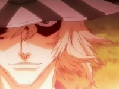

Forums galactiques > Taverne galactique : lieu de discussion informel > Au coffee shop des jours heureux
| Roots Boy Réputation à la taverne : 923  14/06 ETU 18:50 | Score : 0 Détails Ca craint ca se mettait vraiment trop la race, les gens ne venaient plus la pour deguster un bon petit bedo mais pour reellement se la coller !!!
Roots boy pensa tout de suite a acheter une licence pour vendre de l' alcool et la ca partirai vraiment en live.Ce serai la depravation totale. Un petit frisson lui parcoura l' echine alors qu il pensa a cet avenir.... Mais Roots boy fut interrompu dans ses penser lorsqu il vit Sandalphon essayer d attrapper des luciole invisibles.Il devai etre soigner, Un melange purple - big bud devrai le guérir mais d' abord la dose pour le medecin .... Allez un petit jeu ====> Qui disjoncte ??????? | ||
| live_ocin Réputation à la taverne : 372  14/06 ETU 19:15 | Score : 0 Détails live_ocin entra fierement dans le coffee shop qu'il n'avait toujours pas remarqué jusqu'a ce jour... C'est avec un large sourire aux levres qu'il aspira une premiere bouffée de fumée qui emplissai l'air de la salle... Il apercut le commendant sandalphon qui semblait faire de la merde mais son attention se porta directement sur les paroles de roots_boy....
"Sjoncte" s'ecria live_ocin!" et le pétard lui fut transmis... C'était surement l'annonce d'un bon debut de soirée | ||
| Sandalphon Réputation à la taverne : 592  14/06 ETU 20:07 | Score : 0 Détails "SJONCTE" ah non merde..heu...bwahahahaha, bippouet !! scouck§§!!!!§e^*$*pqsmùf;lù
J'ai assez disjoncté, Roots ? Le prochain est pour moi ? | ||
| Roots Boy Réputation à la taverne : 923 14/06 ETU 21:05 | Score : 0 Détails Oé t inkiet Sandalphon il est bien pour toi le pétard pas pour le motard qui a rien compris ^^
Mais t inkiet live_Ocin je te paie un pet pour le tripp choisi dans ma selection.... | ||
| progress Réputation à la taverne : 53  15/06 ETU 10:40 | Score : 0 Détails
Bon les gars trop de joint tue le joint, alors petite pose de 10 minutes, histoire de digérer les spliffs, je propose de boire un petit coup, et après on est parti pour une petite session Bang. *Joyeusement, il rouvrit son sac à dos et tira de celui ci un Bang énorme, dont la tuyauterie acheminant la fumé jusqu’à la bouche était à la fois complexe et divertissante à regarder* Qui veut essayer ? s’écria-t-il | ||
| Sandalphon Réputation à la taverne : 592 15/06 ETU 11:45 | Score : 0 Détails YES, progress, paye ton Bang.
Je pense toutefois qu'il serait scandaleux de commencer sans Owen, puisqu'il est celui qui nous a ramené cet instrument révolutionnaire du fin fond de la galaxie THC... | ||
| progress Réputation à la taverne : 53 15/06 ETU 12:14 | Score : 0 Détails Mon cher, vous vous méprenez, je suis celui qui a été au fin fond d’un système inconnu, habité que par des populations autochtones. C’est d’ailleurs eux qui m’ont fait cadeau de ce jouet… mais je trouve que de la nommer planète THC, est une excellente idée.
Je vous propose de tester cet engin fabuleux en attendant le retour du commandant Owen, il lui restera de toute manière de quoi s’en coller une sévère. *progress bourra joyeusement la douille d’herbe bien verte, et tendit le bang au commandant Sandalphon en lui faisant un sourire malicieux* A vous l’honneur commandant Sandalphon, vous m ‘en direz des nouvelles… | ||
| Sandalphon Réputation à la taverne : 592 15/06 ETU 14:00 | Score : 0 Détails Sandalphon prit une profonde inspiration, puis aspira à l'intérieur de l'appareil
glougllouglglglglglglglglglglglglglglglouglougliuouou.... 15 minutes plus tard, la fumée commença à se dissiper, et tous purent voir le visage souriant de Sandalphon, et furent effarés de constater combien cet appareil diabolique pouvait accélérer la déchéance d'un Seigneur autrefois si noble et puissant. | ||
| progress Réputation à la taverne : 53 15/06 ETU 18:27 | Score : 0 Détails Ketze, Roots Boy, désirez vous essayer ce formidable outil en attendant l'arrivé du commandant Owen?
*sans même attendre leur réponse, progress commença de nouveau à blinder machinalement sa douille de cette recette médicale préscrite par son docteur de la planète THC, en se disant que quoi qu'ils disent (en devinant tout de même leur réponse) il se fera un plaisir de la consommer.* | ||
| Urahara Réputation à la taverne : 9  15/06 ETU 19:24 | Score : 0 Détails Le commandant Urahara entra dans le coffe shop, il avait senti les effluves à 200 metres et il adorait ca.
Il alla directement voir Roots Boy: "S'lut, 3 gr d'Orange Bud s'te plait" Une fois servi, il alla se caler à une table dans un coin et regarda progress et sandalphon se mettre une race avec leur hyper bang. Il aimait être tranquille pour fumer son premier spliff d'après travail (parce que mine de rien commandant c'est crevant). Il aurait tout le temps de rejoindre ses futurs potes de fume un peu plus tard. | ||
| Sandalphon Réputation à la taverne : 592 15/06 ETU 19:43 | Score : 0 Détails D'une voix pâteuse et enfumée, Sandalphon salua Urahara.
Il se souvenait vaguement de lui, lui ayant déjà acheter des Mod Souls du temps où il commerçait sur Terre. Il n'eut que le temps de lui passer son pétard avant de sombrer dans un coma post-cannabis. | ||
| Ketze Réputation à la taverne : 346  15/06 ETU 21:40  | Score : 0 Détails Voila maintenant 1 semaines que Ketze habitait dans le coffee shop. Et cela faisait une semaine qu'il n'avait bougé que pour vomir et aller aux toilettes.
Il était assis, toujours sur la même chaise, si bien que certain clients commencèrent à se demander s'il nétait pas fait de roche... Tout un coup progress s'écria : "regardez les mec, il a bougé !!!!" Sandalphon lui répondit : "Non fausse alerte, il ne fait que rouler, ça compte pas..." Ketze se leva alors rapidement de sa chaise et dit : "vous croyez que je vous ai pas entendu ? Vous vous moquez de moi ? Si c'est comme ça, après ce pétard, j'arrête définitivement de fumer !!" Il fuma son pétard et sorti du coffee shop en furie. Deux jours plus tard, il était de retour... | ||
| Roots Boy Réputation à la taverne : 923 15/06 ETU 22:25 | Score : 0 Détails Yo man envoie le Guebish !!!
Il a l' air enorme Roots boy prit le B et commenca a remplir la douille de sa reserve personnelle , de la resine de canna pure Ce techi allai Poké sevère et c est ca qui est bien !!! | ||
| Sigma Réputation à la taverne : 197  15/06 ETU 22:42 | Score : 0 Détails Un fixe d'héroïne pour le commandant Sigma, juste en arrivant....pour se mettre dans l'ambiance
| ||
| progress Réputation à la taverne : 53 16/06 ETU 10:36 | Score : 0 Détails Sigma tu sors ! ! ! !
Pas d’héro ici (en tout cas pas en intra) Donc soit tu prends ce bang soit tu dég… *progress vit le commandant ketze revenir au coffee shop des jours heureux, après ses deux jours d’absence, il réalisa que son teint était devenu plus rose qu’à l’ordinaire. Progress regarda roots boy (qui cela dit en passant semblait complètement perché suite à cette degustation abusive qu’il venait de prendre) tous deux satisfait de revoir de nouveau leur ami d’fume revenir* « ah, viens ici ketze, tu as mauvaise mine tu as le teint tout rose… » heureux de se retrouver tous ensemble de nouveau, il reprirent leurs activité normales dans le coffee shop des jours heureux. | ||
| Owen Réputation à la taverne : 0  16/06 ETU 10:56 | Score : 0 Détails Le Capitaine Owen arriva usé et éteint dans le coffee shop.
Lorsqu'il enleva sa cape noir , des feuilles de saisi de chiffres et graphiques des evolutions de la Contre Bande volèrent au quatre coins de la pièce centrale. Il fit tour d'horizon pour savoir qui était présent , il aperçu Ketze et Progress, il sentit une vague de chaleureux lui monter au cerveau. Il se dirigea lentemnt vers la table , comme si la galaxie l'accablait d'un fardeau dont il ne pouvait se séparer. En passant il déroba le Gubish et un peux de cette herbe si convoitée la "Spécial Crystal Pastis" dérrière le comptoir de Roots Boy. Il alla s'asseoir et moins de temps qu il ne faut pour dire "COULE ! COULE! " Le capitaine Owen se laissa tomber en arrière. Son visage était apaisé , enfantin ,vide... Apres quelques futilité echanger avec les commandants de la table , il se plongea dans un rêve eveillé... | ||
| live_ocin Réputation à la taverne : 372 16/06 ETU 14:34 | Score : 0 Détails live_ocin qui trainait dans les parages ouvrit la porte du coffee shop des jours heureux. Il aperçut alors ketze se mettant la race apres 2 jours d'absence...
"alors tout est redevenu normal ici" pensa directement live_ocin, qui rejoint ses compagnons de saoulerie au meme instant. | ||
| Owen Réputation à la taverne : 0 16/06 ETU 14:48 | Score : 0 Détails Non les choses changent , les drogués ne changent pas.
L'esprit d'un dorgué divague , ouvre de nouvelles portes, ce perd dans des territoire inconnu de l'inconscient. Le drogué n'est pas un visionnaire , il est simplement égaré dans un forêt si dense et si obscure , que quand enfin il croit, apercevoir de la lumière ,arriver au bout de son périple, il ouvre ses yeux ramène son esprit à la réalité et comprend trop tard qu'il est sorti par là ou il est rentré. Le drogué rebrousse chemin car il est incapable de fixer , de se souvenir de ce qui la vue dans l'une des multiples digressions de son esprit. Il perd le fil de sa pensée et cherche au fur et à mesure qu 'il le tire à le raccrocher à un raisonnement logique... le drogué n'est pas un malade , mais un égaré Apres ce monologue , poétique qui déchaina le Capitaine à tel point qu'il fut debout sur une table pour prononcer ce poème en prose , il récupera son instrument s'en servi et d'un visage décomposé alla se rasseoir tout désintégrant la table qui lui avait servit d'estrade. | ||
| progress Réputation à la taverne : 53 16/06 ETU 15:19 | Score : 0 Détails *progress fut stupéfait, ainsi que tant d’autre membres du coffee shop, de voir son ami de longue date parler de la sorte. Jamais il n’avait entendu quelque chose d’aussi réfléchi de sa part
Alors afin de se remettre les idées au clair et de réaliser le poids de ses propos, il agrippa vivement le bang, le rempli jusqu’à la gueule avant de fumer tout son contenu jusqu’à la dernière goutte de fumé. Après avoir expirer la fumer de ses poumons il se pencha en arrière, bien profondément dans son dossier de fauteuil. Il méditait… Après une longue réflexion, progress réalisa qu’il était l’heure pour Owen de fumer un pétard digne de se nom afin de le faire revenir sur terre et retrouver celui qu’il avait connu autrefois… c’est ce qu’il fit* | ||
| Sandalphon Réputation à la taverne : 592 16/06 ETU 15:56 | Score : 0 Détails Après plusieurs heures de coma, Sandalphon s'extirpa de sous le canapé, et vit que tous ses compagnons étaient là : Progress, Owen, Roots Boy, live_ocin et Ketze. Réalisant combien ce coffee créé par Roots Boy était un vrai appât à Rootsmen, il s'écria :
"Yeah les mans, on est tous là ! Bientôt cet univers sera nôtre et on instaurera une contrebande de drogues galactiques, d'ac ? En attendant : FAUT PAS Y CRAINDRE !" Effarés par tant de psychédélisme, ses compères ne mirent pas longtemps à réaliser son état, et mirent alors tout en oeuvre pour l'atteindre également. Les stocks de Roots Boy dimiuaient de jour en jour, mais il fallait s'y attendre avec de tels clients... |
Forums galactiques > Taverne galactique : lieu de discussion informel > Au coffee shop des jours heureux